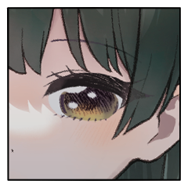
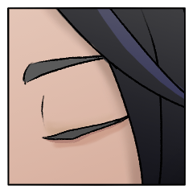
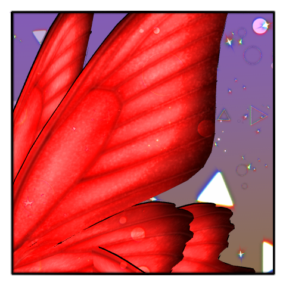

GM
それでは第三サイクル第四シーン繭子の手番……の前に。
GM
【秘密：化生鏖刃】
使い手に莫大な力を与える代わりに、その身を獣へと変える魔刀。
このプライズを持つ者は、自分の手番で妖魔化を行える。
この妖魔化の効果は自分で決めることが出来る。
また、妖魔化する度に【頑健】の忍法を修得する。
背景【魔人】を持っている場合、即座に特殊忍具【霊装】を取得すること。
GM
翡翠は背景【魔人】を持っているため、【霊装】を取得済。この際特技に呪術を指定しております。
GM
◆メインフェイズ第三サイクル第四シーン
シーンプレイヤー：蘭沢 繭子
GM
状況としては、前のサブロールの少し後でしょうか。
GM
なのに月が空には眩しく、まるで道先を照らすように。
蘭沢 繭子
「かつては、この瞳にはなんでも映りました」
蘭沢 繭子
「人の心を、考えを、おしはかる必要はなかったのです」
蘭沢 清誉
「……役目を終えて見えなくなったと、聞いてはいた」
蘭沢 繭子
「私には、あなたの心が見えたことはありません」
蘭沢 繭子
「……見えればよいのに、と思っていました」
蘭沢 清誉
「……形ばかりの夫の心を推し量って何になる」
蘭沢 清誉
何も知らず、望みなどないと、選ぶこともできないと。
蘭沢 繭子
「どう思われているか分からないのが、おそろしかった」
蘭沢 繭子
「ひとの望むことが、望まないことが、以前は労せずとも知れたのに」
蘭沢 繭子
「清誉様の心のうちは、ひとつも分からなかった……」
蘭沢 清誉
頭ひとつほど視線の下にある繭子の顔を、見下ろす。
雨にけぶる月の光の中、その瞳にひどく狼狽した己が映っている気がした。
蘭沢 繭子
「言いつけられたことだけは守っていようと思いました」
蘭沢 清誉
「…………好きで、あのようにしていたわけではないと」
蘭沢 清誉
間抜けなことを言っていると自分でわかっていて。口を突く。
蘭沢 繭子
「ただああするより他に、私にはどうすればよいのか分からなかったのです」
蘭沢 清誉
「何のために学校へ遣ったと思っている……」
蘭沢 清誉
「何か学べば逃げるなり、泣くなり、するものだと、ばかり……」
蘭沢 繭子
「……ですが、何も言わずにいたのは私も同じこと」
蘭沢 繭子
「清誉様も、私の心のうちの分からぬことが、おそろしかったのではないかと」
蘭沢 清誉
話題が戻ってきて、またひとつ、瞬いた。

蘭沢 繭子
またたく瞬間すらも逃さぬように見つめている。
蘭沢 清誉
「……失うのだと、思いたくなかった……」
蘭沢 清誉
「お前を見る度に、お前が話す度に、お前が笑う度に」
蘭沢 清誉
「俺はいずれお前を失うのだと、気づいた」
蘭沢 清誉
「お前を斬ったとき、ようやくその恐怖から逃れられたと思った」
蘭沢 清誉
「あの獣は、『二度目の生涯を始められる』と、そう言った」
蘭沢 清誉
「……お前ともっと、話しておくべきだったんだ」
蘭沢 繭子
「誤ったのは、私も同じでございますよ」
蘭沢 清誉
「あの獣にもわかったことが、俺は今更……」
蘭沢 清誉
月明かりに薄明るく照らされた妻の顔を見る。
蘭沢 繭子
「まるで、この世の終わるようなことを仰るのですね」
蘭沢 繭子
「これからのことを語ってはくださらないのですか？」

蘭沢 清誉
「……獣を討った後より先のことなど考えたこともなかったんだ」
蘭沢 清誉
「役目を果たしてなおも生が続くことなど想像したこともなかった」
蘭沢 繭子
今はまだ、膨らみの見てとれるようなことはない。
蘭沢 繭子
「おいしい喫茶店であるとか、恋人と遊びに行った場所であるとか、教えてくれるんです」
蘭沢 清誉
「……お前がそんな口を利く女だったとはな」
蘭沢 繭子
「嫁ぎ先では口を閉じているのが懸命ですよと、よくたしなめられたものです」
蘭沢 清誉
「大人しく従順でよく気の利く、利口な娘だとしか言われていない」
蘭沢 繭子
「清誉様の務めなら、妻である私の務めでもありましょう」
蘭沢 清誉
「どうだか知らんが、あれはお前と戦いたくはないだろうよ」
蘭沢 繭子
雨脚が弱まっていく。この場を発つ時が迫る。
蘭沢 繭子
「……これも、友人が教えてくれたことなのですが」
蘭沢 繭子
普通のこと、そう言いながらも恥じらいに目を逸らす。
蘭沢 清誉
口づけられた頬に、唇の柔らかさが残っている。
蘭沢 清誉
「……そういうことは帰ってからにしろ」
蘭沢 清誉
霧のようにけぶる雨の中、蝶を追って。
終末のはじまりを探しに。
蘭沢 繭子
手に手を取って、夫婦があなたの前に立っている。
蘭沢 清誉
分かれたときには異形だったその姿を見据える。
蘭沢 繭子
未来も、過去も、秘められたものも、人の心のうちも、
蘭沢 繭子
あなたの心に触れようと、見据えている。
蘭沢 繭子
2D6+1>=5 （判定：千里眼の術） (2D6+1>=5) ＞
12[6,6]+1 ＞ 13 ＞ スペシャル(【生命力】1点か変調一つを回復)
GM
忍具を１個取得してください。これに関しては種類の申告も。
[ 蘭沢 繭子 ] 忍具 : 2 → 3
翡翠
ET 感情表(2) ＞
友情（プラス）／怒り（マイナス）
蘭沢 繭子
ET 感情表(6) ＞
狂信（プラス）／殺意（マイナス）
蘭沢 繭子
「あなたが、幸せを掴むために戦えるのかということです」
翡翠
「俺がつかみかけた幸福は、君が自分で壊したんじゃないか」
蘭沢 繭子
「あなたに救われた恩を、私は何一つ返せていない……」
翡翠
たとえそれが2人きりでなくとも、俺は良かったのに。
翡翠
「わかりあえねば刃を交え、一方の死によって沈黙と正義を為す」
翡翠
「それを為せど。人々は『英雄』と呼び称え、人ならざるものと遠ざけ、祀り上げるだけだ」
翡翠
結局のところ、心に刻まれたのは突き刺すような苦しみばかり。
翡翠
俺はおはようが言えれば、それだけでよかったのに。
翡翠
金の髪も、翡翠の目も。
今や忌むべきものではなかろうに。
蘭沢 清誉
なおも呪いの向かう先として、現世の敵として。
翡翠
髪はエメラルドの如く輝き、宵闇に虹を塗した翅の伸びる。
牛墓 鞴良
常ならむ行く末を見る眼が、めおとを見る。
翡翠
異形の獣のすらりと抜くは、妖刀『化生鏖刃』。
蘭沢 繭子
小さな身体に、怒りを、視線を、受け止める。
翡翠
「さあ、終焉をはじめよう。後の世に鬼と呼ばれし英雄の……最後の戦の幕開けだ」
翡翠
義を嘲笑い。情に仇なせ。我を貫いて。
我が血をぶち撒け、屍を踏み超え続くのならば。
それぞ、まさしく人の歴史なり。
蘭沢 清誉
「生憎と畜生の言葉は、理解ができなくてな」
蘭沢 清誉
人の世の業が生み出せし、神の名を戴く刀。
蘭沢 清誉
「蘭沢七代当主、清誉の名に於いてーー貴様を討つ」
GM
クライマックスフェイズに突入する前に、休憩を挟みましょう。
GM
ラウンド１、プロットオープンをお願いします！
[ 蘭沢 繭子 ] がダイスシンボルを公開。出目は 4 です。
[ 蘭沢 清誉 ] がダイスシンボルを公開。出目は 4 です。
[ 牛墓 鞴良 ] がダイスシンボルを公開。出目は 4 です。
[ 翡翠 ] がダイスシンボルを公開。出目は 4 です。
GM
◆ラウンド１
プロット４：翡翠、繭子、清誉、鞴良
蘭沢 繭子
2d6 (2D6) ＞
6[3,3] ＞ 6
蘭沢 清誉
2d6 (2D6) ＞
2[1,1] ＞ 2
牛墓 鞴良
2d6 (2D6) ＞
7[2,5] ＞ 7
翡翠
2d6 (2D6) ＞
4[1,3] ＞ 4
蘭沢 清誉
撤回しました。先に【魔血】効果で【長肢】。
[ 蘭沢 清誉 ] 頑健 : 2 → 1
蘭沢 清誉
2D6>=5 （判定：異形化）
(2D6>=5) ＞
4[2,2] ＞ 4 ＞ 失敗
GM
失敗ですね。逆凪の適用はサイクル終了時なので
[ 蘭沢 繭子 ] 忍具 : 3 → 2
蘭沢 清誉
2D6>=5 （判定：異形化）
(2D6>=5) ＞ 7[1,6]
＞ 7 ＞ 成功
GM
成功ですね。以降清誉の接近戦攻撃、奥義クリティカルヒットの射程が+1されます。
蘭沢 清誉
続いて奥義使用します。対象は【翡翠】。
蘭沢 清誉
《畜仆し》
指定特技 ：言霊術
エフェクト：クリティカルヒット／くらまし／射程低下
効果・演出：獣の存在に呪われるようにして生きてきた。
獣を屠るためだけに、脈々と一族に継がれてきた呪いの一閃。
GM
了解しました。同じく奥義効果の提示をお願いします。
翡翠
《黄昏の終焉 -crepusculum-》
指定特技 ：生存術
エフェクト：クリティカルヒット/滅び、くらまし/威力低下、射程低下
GM
翡翠の滅びの乗ったクリティカルヒットにより、清誉のクリティカルヒットは相殺されます。
蘭沢 清誉
獣と眼前に対峙し、ぞわ、と肉のうちが粟立つ。
蘭沢 清誉
蟲どもの足が肌の下を這いずり回る。
ただひとつの宿命ーー畜仆しを成すために、泥のように流れる血の呪い。
蘭沢 清誉
『化粧応神』の刃が、月の光を受けて煌めく。
翡翠
斜陽の世界を終わらせんがため、刃を立て、兇刃を返す。
翡翠
妖魔化。
穢れは『戦術』、獲得するのは妖魔忍法『百眼』。頑健を+1。
新たな世に武器も戦術も必要ない。
[ 翡翠 ] 戦術 : 1 → 0
翡翠
2D6>=5 （判定：言霊術） (2D6>=5) ＞ 7[2,5]
＞ 7 ＞ 成功
GM
黒羽のキャラクターシートを情報タブに提示しました。
次のラウンドから黒羽が参戦します。
黒羽：陰
その笛に呼ばれるように、ひらり、ひらりと蝶の舞う。
[ 蘭沢 繭子 ] 戦術 : 1 → 0
GM
OK ではこのラウンドの繭子の判定のスペシャル値が-2されます。
蘭沢 繭子
凶手を組合わせ、接近戦攻撃を撃ちます。
蘭沢 繭子
2D6>=5 （判定：刀術） (2D6>=5) ＞
4[1,3] ＞ 4 ＞ 失敗
GM
ファンブルですね。逆凪の適用はラウンド終末ですので、行動はそのままできます。
蘭沢 繭子
2D6>=5 （判定：刀術） (2D6>=5) ＞ 7[1,6]
＞ 7 ＞ 成功
GM
成功ですね。次の命中判定のスペシャル値が-2。
蘭沢 繭子
2D6>=5 （判定：千里眼の術） (2D6>=5) ＞
10[5,5] ＞ 10 ＞ 成功
GM
任意の分野を回復し、【神咒】により忍具を１個獲得できます。
翡翠
2D6+1>=8 （判定：言霊術） (2D6+1>=8) ＞
4[2,2]+1 ＞ 5 ＞ 失敗
[ 翡翠 ] 忍具 : 2 → 1
翡翠
2D6+1>=8 （判定：言霊術） (2D6+1>=8) ＞
8[4,4]+1 ＞ 9 ＞ 成功
[ 蘭沢 繭子 ] 戦術 : 0 → 1
蘭沢 繭子
地上にこぼれた光を集めるように、掌が宙をなぜる。
蘭沢 繭子
魔を祓う鈴の音が風に乗り、刀のように翡翠を切り裂かんとする。
牛墓 鞴良
2D6>=5 （判定：憑依術） (2D6>=5) ＞ 6[3,3]
＞ 6 ＞ 成功
GM
成功ですね。これにより繭子の【神咒】が戦闘終了まで無効化されます。
牛墓 鞴良
ゆら、と煙が揺れて。
月影の闇に紛れた男が這うように走る。
牛墓 鞴良
煙管の先が、地面を掻くと女の小さな影が高い音をたてて空に散った。
牛墓 鞴良
神なる力、魔なる力を霧散させる剣客の秘術。
蘭沢 繭子
かつてと比べればないにも等しい神との繋がりが、さらに薄れゆくのを感じる。
牛墓 鞴良
此はおしなべて闇なり。
影の落ちる場所もない。
GM
プロット４の処理が終了し、ラウンド１が終了。
GM
次のラウンドに移りましょう。
各人、プロットをお願いします。
GM
ではラウンド２，プロット開示をお願いします！
[ 蘭沢 繭子 ] がダイスシンボルを公開。出目は 4 です。
[ 蘭沢 清誉 ] がダイスシンボルを公開。出目は 5 です。
[ 翡翠 ] がダイスシンボルを公開。出目は 4 です。
[ 翡翠 ] がダイスシンボルを公開。出目は 3 です。
[ 牛墓 鞴良 ] がダイスシンボルを公開。出目は 3 です。
GM
◆ラウンド２
プロット５：清誉 ４：繭子、黒羽 ３：翡翠、鞴良
[ 蘭沢 清誉 ] 頑健 : 1 → 0
蘭沢 清誉
2D6>=5 （判定：異形化） (2D6>=5) ＞ 7[1,6]
＞ 7 ＞ 成功
GM
成功ですね。以降清誉の攻撃に接近戦ダメージが+1されます。
GM
了解です。まずは命中判定を。【鬼影】により-2がつきます。
蘭沢 清誉
2D6-2>=5 （判定：骨法術） (2D6-2>=5) ＞
2[1,1]-2 ＞ 0 ＞ ファンブル
GM
特に振り直しがなければそのまま演出をどうぞ。
蘭沢 清誉
息を調える。血が疼き、内側から切り裂くような痛み。
蘭沢 清誉
ーー魔王流は、その身に隠忍の血を交わらせることで魔を討つ力を得る。
蘭沢 清誉
数多もの、数多もの。
命と呼ぶにも矮小な魂を謂われなく潰し作り上げる呪い。
蘭沢 清誉
その血を流す己もまた、獣と呼ぶに相応しいと。
蘭沢 清誉
ーー己が生きてきた意味が、そこにあるというのに！
GM
繭子と黒羽は2D6を。出目の低い方から処理します。
蘭沢 繭子
2d6 (2D6) ＞
9[3,6] ＞ 9
黒羽(陰
2d6 (2D6) ＞
6[1,5] ＞ 6
GM
黒羽からですね。禁術の適用はプロット終了時になります。
GM
了解です。使用キャラクターの指定はいりませんね。
GM
プロット４の処理以降、凶手を使ったものは１点の接近戦ダメージを受けます。
黒羽(陰
2D6>=5 （判定：飛術） (2D6>=5) ＞ 7[1,6]
＞ 7 ＞ 成功
[ 蘭沢 清誉 ] 戦術 : 1 → 0
黒羽(陰
キラキラと輝く粉が小さな刃となり、清誉に降り注ぐ。
[ 蘭沢 繭子 ] 戦術 : 1 → 0
蘭沢 繭子
凶手を組合わせて接近戦攻撃。対象は翡翠。
蘭沢 繭子
2D6>=5 （判定：刀術） (2D6>=5) ＞ 9[3,6]
＞ 9 ＞ 成功
蘭沢 繭子
2D6-2>=5 （判定：千里眼の術） (2D6-2>=5) ＞
10[4,6]-2 ＞ 8 ＞ 成功
[ 蘭沢 繭子 ] 戦術 : 0 → 1
翡翠
2D6+1>=8 （判定：言霊術） (2D6+1>=8) ＞
9[4,5]+1 ＞ 10 ＞ 成功
蘭沢 繭子
けれどすれ違う瞬間に、水晶の瞳が翡翠を捉える。
蘭沢 繭子
あなたが私にかけてくれた言葉は、どれも
牛墓 鞴良
2d6 (2D6) ＞
6[1,5] ＞ 6
翡翠
2d6 (2D6) ＞
10[4,6] ＞ 10
牛墓 鞴良
《霜止・斑鳩払其羽》
指定特技 ：召喚術
エフェクト：範囲攻撃/滅び/人数制限
蘭沢 繭子
■奥義
《繭籠》
指定特技 ：千里眼の術
エフェクト：絶対防御/くらまし/防御低下
GM
では清誉のダメージ喪失が無効化。繭子は任意の分野２点を潰してください。
[ 蘭沢 繭子 ] 忍術 : 1 → 0
[ 蘭沢 繭子 ] 戦術 : 1 → 0
牛墓 鞴良
天より降る光。
まばゆい羽根の和毛が舞う。
牛墓 鞴良
男の背に、翼を携えた女の光が灯る。
かつて炉に身を投げた、獣の母。
牛墓 鞴良
刀に身を捧げた異郷の神格が剣客の技に宿る。
牛墓 鞴良
柔らかすぎる刺突が夫婦の肉を穿つ。
血が噴き出るまで、その疵に気づくことはない。
蘭沢 繭子
けれどその身を血に汚したのは、女だけ。
蘭沢 繭子
清誉の身体を、天からそそぐものとは違う光が包んでいる。
蘭沢 清誉
内を這いずる気配が僅か和らぎ、刺突が過ぎてもなお、溢れ出すことはない。
牛墓 鞴良
煙管の隠し刃が光る。
女の血脂を払い、元の煙管に納まった。
牛墓 鞴良
夫婦の仲睦まじい。
思ひ出を冠した奥義。
蘭沢 繭子
翼持つ、天使のごときひとの姿を見上げる。
牛墓 鞴良
束の間の幻想の逢瀬が終わった。
女は、女の前に淡くゆらいで消ゆる。
蘭沢 清誉
妻と視線を交わしたのちは、ただ。
己が討つべき獣を見据える。
翡翠
2D6+1>=5 （判定：言霊術） (2D6+1>=5) ＞
7[2,5]+1 ＞ 8 ＞ 成功
GM
成功。次ラウンドより黒羽がもう一体追加されます。
GM
多分今日中には終わらないので、明日を見てます。
GM
日をまたいだクライマックスの覚悟をよろしくお願いします。
GM
ゆっくりごはんたべて ゆっくりやすんで ゆっくりプロット考えてね
GM
改めて、22時まで休憩となります。
よろしくお願いします！
[ 黒羽(陰 ] がダイスシンボルを公開。出目は 4 です。
[ 蘭沢 清誉 ] がダイスシンボルを公開。出目は 4 です。
[ 蘭沢 繭子 ] がダイスシンボルを公開。出目は 4 です。
[ 黒羽(陽 ] がダイスシンボルを公開。出目は 3 です。
[ 牛墓 鞴良 ] がダイスシンボルを公開。出目は 3 です。
[ 翡翠 ] がダイスシンボルを公開。出目は 1 です。
GM
◆ラウンド３
プロット４：繭子、清誉、黒羽(陰) ３：鞴良、黒羽(陽) １：翡翠
蘭沢 繭子
2d6 (2D6) ＞
3[1,2] ＞ 3
蘭沢 清誉
2d6 (2D6) ＞
6[2,4] ＞ 6
黒羽(陰
2d6 (2D6) ＞
8[3,5] ＞ 8
蘭沢 繭子
2D6>=5 （判定：刀術） (2D6>=5) ＞
11[5,6] ＞ 11 ＞ 成功
蘭沢 繭子
これ、禁術のダメージのあとに回復したいんだけど
GM
生命力の喪失のみがプロット終末処理に移り、不可能と裁定いたします。
蘭沢 繭子
なるほどです。器術をそのまま回復します。
蘭沢 繭子
2D6>=5 （判定：遊芸） (2D6>=5) ＞ 5[1,4]
＞ 5 ＞ 成功
牛墓 鞴良
2D6>=8 （判定：見敵術） (2D6>=8) ＞ 8[2,6]
＞ 8 ＞ 成功
蘭沢 繭子
蝶の舞ったあとを鱗粉が散って、繭子の肌を裂く。
蘭沢 繭子
翡翠との間に立つ男を縛り付けんと、糸が絡む。
牛墓 鞴良
あの日、妻が身を投げた炉から汲み、絶やさず携えている火種。
蘭沢 清誉
2D6>=5 （判定：骨法術） (2D6>=5) ＞ 6[1,5]
＞ 6 ＞ 成功
蘭沢 清誉
2D6>=5 （判定：言霊術） (2D6>=5) ＞ 8[2,6]
＞ 8 ＞ 成功
GM
OK。鞴良は言霊術で回避判定をお願いします。
GM
秘密を開示し、回想シーン演出を行ってください。
蘭沢 清誉
頭の片隅にそれはあった。謎かけのような滑稽な言葉が。
牛墓 鞴良
【秘密：牛墓
鞴良】
あなたの子は、あなたが鍛え上げた魔刀『化生鏖刃』を扱う乱世の英雄であった。
だが、刀を使い過ぎたことで『化生鏖刃』に取り込まれ、『終末の獣』へと成り果てた。
獣となった子を殺すために鍛え上げた刀こそが『化粧応神』である。
『化粧応神』を鍛え上げるため、あなたの伴侶は炉に身を投げ入れた。
あなたの【本当の使命】は二刀を折ることである。
あなたの刀の使用者同士が戦って死亡した場合、死亡した者の刀が折れる。
残った刀をあなたの炉に投げ入れれば、そちらも折ることが出来る。
あなたにはもうひとつ秘密がある。
牛墓 鞴良
【追加の秘密：牛墓
鞴良】
あなたはあと一度だけ、魔刀『化生鏖刃』を鍛え上げることが出来る。
鍛えるための宣言は自分がシーンプレイヤーのドラマシーンで行うこと。
宣言した場合、この秘密は公開される。
また、その場合あなたはクライマックスフェイズ終了時に死亡する。
この刀の力を使って妖魔化した者は、必ず制御判定に失敗し、
エンディングフェイズで新たなる『終末の獣』と化す。
あなたは刀の使用者になれない。
あなたには更にもうひとつ秘密がある。
牛墓 鞴良
人の身に生を受け。
人の手を取り、一度でも誰ぞその身を案じたのなら。
牛墓 鞴良
どれほどの月日を、どれほどの執念を、どれほどの無常を抱えても。
離れることは、難しい。
牛墓 鞴良
【最後の秘密：牛墓
鞴良】
あなたは自らの【使命】を果たすため、わが子との記憶を捨てた。
もし記憶を取り戻してしまったなら、あなたはわが子を殺せなくなる。
その場合、あなたの【使命】は『終末の獣』を守ることに変更される。
蘭沢 清誉
――それでも、お前たちを過去にしなければならない。
これからを歩むため。違えた道から戻ることを許されたなら。
GM
回想シーン効果により鞴良の行為判定に+3の修正がつきます。
判定をどうぞ。
牛墓 鞴良
2D6+3>=9 （判定：憑依術） (2D6+3>=9) ＞
8[3,5]+3 ＞ 11 ＞ 成功
牛墓 鞴良
煙管が神刀の切っ先を止める。
鍔迫り合い、男が見据える。
蘭沢 清誉
尚も、退かず。もとより斬るべきは目の前の男ではない。
蘭沢 清誉
「――俺は。俺たちは、この先を生きる」
黒羽(陰
2D6>=5 （判定：飛術） (2D6>=5) ＞
3[1,2] ＞ 3 ＞ 失敗
黒羽(陽
2d6 (2D6) ＞
6[1,5] ＞ 6
牛墓 鞴良
2d6 (2D6) ＞
8[3,5] ＞ 8
GM
禁術の裁定に関して認識の食い違いがあったため、
GM
相談の結果、先程召喚した黒羽(陽)を火蜥蜴だったものと変更します。
ただしプロット諸々への影響もあるため、そちらの登場は次の４ラウンド目からと裁定。
牛墓 鞴良
大詰を組み合わせ、交叉を使用します。
対象は蘭沢 清誉。
牛墓 鞴良
2D6>=5 （判定：刀術） (2D6>=5) ＞ 7[2,5]
＞ 7 ＞ 成功
牛墓 鞴良
霊装を使用し、回避指定特技を呪術に変更します。
GM
了解しました。清誉は呪術より回避判定を。感情修正で+1ですね。
蘭沢 清誉
2D6+1>=10 （判定：言霊術） (2D6+1>=10) ＞
4[2,2]+1 ＞ 5 ＞ 失敗
GM
ダメージは接近戦ダメージが2点と射撃戦が1点。
牛墓 鞴良
2d6 (2D6) ＞
7[2,5] ＞ 7
牛墓 鞴良
2D6-2>=6 （判定：憑依術） (2D6-2>=6) ＞
7[2,5]-2 ＞ 5 ＞ 失敗
翡翠
2D6+1+2-2>=8 （判定：言霊術） (2D6+1+2-2>=8) ＞
9[4,5]+1+2-2 ＞ 10 ＞ 成功
[ 蘭沢 繭子 ] 器術 : 1 → 0
GM
プロット４処理のときに減らすはずだった繭子のダメージです。
GM
それと、清誉は体術と戦術と任意の１分野を潰してください。
[ 蘭沢 清誉 ] 体術 : 1 → 0
[ 蘭沢 清誉 ] 器術 : 1 → 0
[ 蘭沢 清誉 ] 忍術 : 1 → 0
牛墓 鞴良
煙管に収まるほどの小さな隠し刀。
その切っ先が月の円弧を描く。
牛墓 鞴良
裏柳生の剣技がひとつ。
不具の摺り足が音もなく地面を滑り、間合いが詰まる。
蘭沢 清誉
鍔競り合いから、不意に迫る刃を受ける。
切り裂かれた部位から呪いの汚泥と共に蟲が散る。
牛墓 鞴良
あたりに舞う蝶の鱗粉を吹きかけ、その刃を通し。
蟲を避けて飛び退る。
牛墓 鞴良
もはや獣と成り果てた、我が子の妖気が死に損ないの背を押す。
蘭沢 清誉
頬を拭う。あとからあとから蟲の出る。
妻の腹に宿った子の血もまた、この呪いを受けるだろう。
獣を討ち果たしたとしてもなお。
[ 蘭沢 清誉 ] 謀術 : 1 → 0
[ 蘭沢 清誉 ] 忍術 : 0 → 1
牛墓 鞴良
今ここで刃を交えている者たちが。
果たして何を成し得るものか。
蘭沢 清誉
兵糧丸を使用して体術を回復、影法師を使用します。
[ 蘭沢 清誉 ] 忍具 : 2 → 1
[ 蘭沢 清誉 ] 体術 : 0 → 1
蘭沢 清誉
2D6>=5 （判定：歩法） (2D6>=5) ＞
3[1,2] ＞ 3 ＞ 失敗
[ 蘭沢 繭子 ] がダイスシンボルを公開。出目は 2 です。
[ 蘭沢 清誉 ] がダイスシンボルを公開。出目は 2 です。
[ 翡翠 ] がダイスシンボルを公開。出目は 1 です。
[ 牛墓 鞴良 ] がダイスシンボルを公開。出目は 3 です。
[ 黒羽(陰 ] がダイスシンボルを公開。出目は 3 です。
[ 赤羽(火蜥蜴) ] がダイスシンボルを公開。出目は 4 です。
GM
◆ラウンド４
プロット４：赤羽(火蜥蜴) ３：鞴良、黒羽 ２：繭子、清誉 １：翡翠

赤羽(火蜥蜴)
百燐で攻撃します。
対象は自動的に「黒羽」「繭子」「清誉」「鞴良」
赤羽(火蜥蜴)
2D6>=5 （判定：火術） (2D6>=5) ＞ 8[3,5]
＞ 8 ＞ 成功
黒羽(陰
2D6>=12 （判定：罠術） (2D6>=12) ＞
12[6,6] ＞ 12 ＞ スペシャル(【生命力】1点か変調一つを回復)
牛墓 鞴良
2D6>=5 （判定：火術） (2D6>=5) ＞
4[2,2] ＞ 4 ＞ 失敗
蘭沢 清誉
2D6>=7 （判定：潜伏術） (2D6>=7) ＞ 8[2,6]
＞ 8 ＞ 成功
蘭沢 繭子
2D6+1>=10 （判定：身体操術） (2D6+1>=10) ＞
9[4,5]+1 ＞ 10 ＞ 成功
牛墓 鞴良
見過ごすように、その火に身体が触れる。
初めてあの日。お前が吹いた火の色と同じ。
牛墓 鞴良
泣け泣け。今はもう。
世界が終わるなら。
牛墓 鞴良
2d6 (2D6) ＞
5[2,3] ＞ 5
黒羽
2d6 (2D6) ＞
4[1,3] ＞ 4
[ 牛墓 鞴良 ] 忍術 : 1 → 0
黒羽
2D6>=5 （判定：飛術） (2D6>=5) ＞
11[5,6] ＞ 11 ＞ 成功
蘭沢 繭子
2D6>=7 （判定：刀術） (2D6>=7) ＞
11[5,6] ＞ 11 ＞ 成功
黒羽
その翅から落ちる鱗粉が細かい星のように鋭いとげをもって。
牛墓 鞴良
大詰を組み合わせて交叉を使用します。
対象は蘭沢 清誉。
牛墓 鞴良
2D6>=5 （判定：刀術） (2D6>=5) ＞
4[1,3] ＞ 4 ＞ 失敗
牛墓 鞴良
しばし、火の粉の散っていく様を眺めるばかり。
蘭沢 繭子
2d6 (2D6) ＞
9[3,6] ＞ 9
蘭沢 清誉
2d6 (2D6) ＞
9[3,6] ＞ 9
蘭沢 繭子
2d6 (2D6) ＞
5[2,3] ＞ 5
蘭沢 清誉
2d6 (2D6) ＞
6[1,5] ＞ 6
蘭沢 繭子
凶手を組み合わせて接近戦攻撃を翡翠に。
[ 蘭沢 繭子 ] 謀術 : 1 → 0
GM
禁術ダメージは後で振ります。先に判定と処理を。
蘭沢 繭子
2D6>=5 （判定：刀術） (2D6>=5) ＞ 8[3,5]
＞ 8 ＞ 成功
GM
成功ですね。そのまま接近戦攻撃を。
鬼影で-2、感情修正で-1。
蘭沢 繭子
2D6-3>=5 （判定：千里眼の術） (2D6-3>=5) ＞
3[1,2]-3 ＞ 0 ＞ 失敗
蘭沢 繭子
2D6-3>=5 （判定：千里眼の術） (2D6-3>=5) ＞
7[3,4]-3 ＞ 4 ＞ 失敗
GM
演出は……ここは同プロットでまとめた方がいいか。
[ 蘭沢 繭子 ] 忍具 : 2 → 1
蘭沢 清誉
《畜仆し》
指定特技 ：言霊術
エフェクト：クリティカルヒット／くらまし／射程低下
翡翠
2D6+2+1-2>=5 （判定：言霊術） (2D6+2+1-2>=5) ＞
7[3,4]+2+1-2 ＞ 8 ＞ 成功
蘭沢 繭子
火の粉の、鱗粉の、光を美しさを踏み越えて
蘭沢 繭子
ひらりひらり舞う蝶を捉えようというように。
蘭沢 繭子
触れないように、かつてそう告げた言葉を返されたかのごとく。
蘭沢 清誉
妻の息が上がるのを横に聞きながら、獣に肉薄し化粧応神を振るう。
翡翠
憎しみは届かない。
哀れみも届かない。
ここには。
蘭沢 清誉
他ならぬお前自身がそれを求めてはいないのに。
翡翠
2D6>=5 （判定：生存術） (2D6>=5) ＞ 8[4,4]
＞ 8 ＞ 成功
蘭沢 清誉
2D6-1>=5 （判定：潜伏術） (2D6-1>=5) ＞
9[3,6]-1 ＞ 8 ＞ 成功
翡翠
構えた刃の切っ先がまっすぐに突きを繰り出す。
蘭沢 清誉
僅かに身を下げ、横にした刀でその切っ先を押し上げるようにして突きをずらす。
GM
シノビガミセッション『化粧応神』第三回はこれにて終了。
GM
次回明日の13時より再開です。よろしくお願いします。
GM
クライマックスフェイズラウンド５から！ がんばってください！
[ 蘭沢 繭子 ] 体術 : 1 → 0